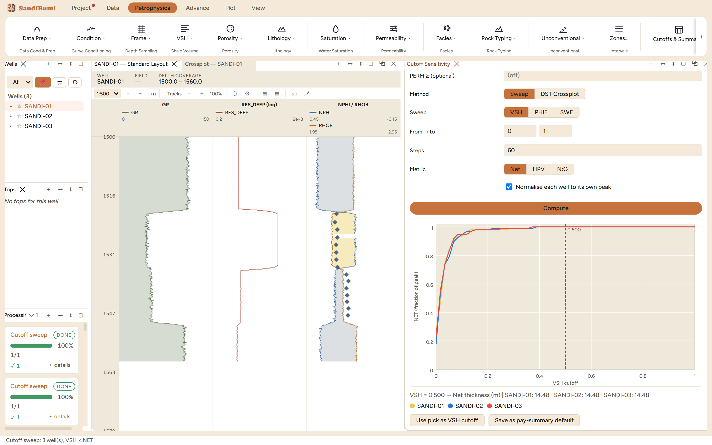

Cutoff Sensitivity answers the question every cutoff invites: how much
does the answer move if the number moves? It sweeps one cutoff across a
range while holding the others fixed, and plots net (or HPV, or N:G)
against the swept value per well. Reach for it before committing a cutoff
to the pay summary: a pick on a plateau is robust, a pick on a cliff
is a coin toss dressed as a decision.
The pane

A VSH sweep from 0 to 1 in 60 steps, net metric, each well
normalised to its own peak: all three curves plateau well before the
0.500 pick line, and the readout confirms 14.48 m of net in each
well at that cutoff.
The base cutoffs are the same three fields as the pay summary,
with the same "Shipped values elsewhere" catalogues; the swept one
varies, the others hold.
Sweep picks the axis (VSH, PHIE or SWE), the range and the
step count; Metric picks what is counted (Net, HPV, N:G);
Normalise each well to its own peak makes wells of different
thickness comparable on one plot.
DST Crossplot is the second method: instead of sweeping, it
plots the flagged samples against a point dataset (a DST or
perforation set) so a cutoff can be judged against what actually
flowed.
Hovering the chart moves the readout; Use pick as VSH cutoff
adopts the hovered value, and Save as pay-summary default hands
it to the summary pane.
Step by step
Open Petrophysics ▸ Cutoff Sensitivity…, set the
base cutoffs, pick the parameter to sweep and press
Compute.
Read the shape before the number: where the curve is flat, the
cutoff is safe; where it dives, small disagreements about the cutoff
are large disagreements about net.
Repeat for the other two cutoffs; each sweep is one
Compute.
Reading the result
On the example wells the VSH sweep rises steeply below 0.2 and is flat
from about 0.3 onward: the section is bimodal, clean sand against real
shale, with almost nothing in between. The 0.5 pick sits on the plateau, so
the exact value is inconsequential here: the readout's
14.48 m per well is the same answer anywhere on the flat. That is a
statement worth writing into the report, and it is also the same statement
the Results QC pane compresses into its one-line cutoff check
("±0.02φ → ±0% net" for the porosity cutoff).
QC and pitfalls
A plateau in one field is not a plateau in the next. The
sweep is per project; re-run it when the geology changes rather than
carrying the conclusion.
Sweep with the other cutoffs at their real values. The curves
interact: a porosity sweep with no saturation cutoff set
measures reservoir, not pay.
Normalisation hides absolute differences on purpose. Turn it
off when the question is which well carries the most net, not where
the cliff is.